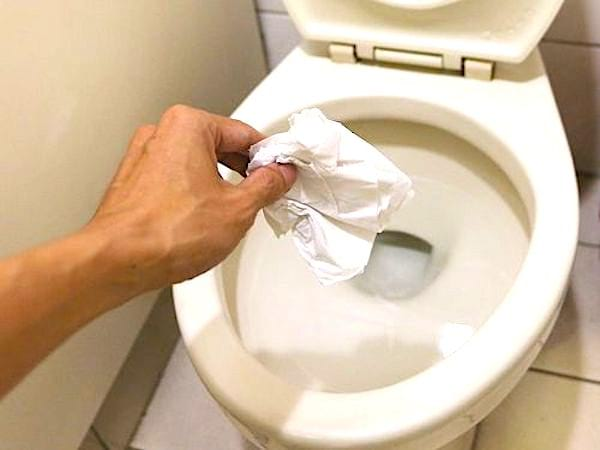
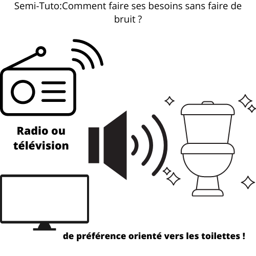
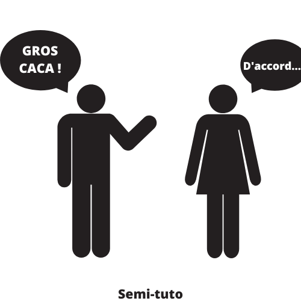

Bonjour , voici un site internet dédié au tutoriel du quotidien des gens.Ce site pour être plus précis vous permet d'avoir un coup d'avance sur les embarras de tout les jours , tel que : avoir envie de faire vos besoins et de ne pas vouloir faire du bruit...Ou autres moments emabarassant du quotidient , ce site vous permet de les CONTRER et de passer une merveilleuse journée...
Ce site internet devrais certe être beaucoup plus agrémenté , mais je ne voudrais pas compliquer les choses et de tout simplement vous donné toutes mes astuces pour contrer les embarras de touts les jours et de peut être avoir une meilleur vie que tout les autres gens...qui sait.

N1:Faire nos besoins chez des amis/copains...Que faire pour être discret ?
Faire nos besoins chez des inconnus c'est très embarrassant , le mieux serait de les faires avant d'aller chez vos amis/copains , mais bon lorsque vous être prit d'une mal de ventre alors que vous aviez déjà fait vos besoins avant , c'est pas de chance...surtout que c'est sûrement un gros bruit de pet qui va s'en suivre , et ce n'est pas toujours prévisible alors...Voici 3 astuces pour ne pas faire de bruit lorsque vous faite vos besoins:
- Mettez plusieurs couche de papier toilettes au fond de la cuvette pour éviter les éclaboussures d'eau et de ne pas faire le moindre bruit (le papier toilette étouffe les sons et empêche les éclaboussures désagréables) de défécation(fècés qui tombe). 
- Mettez de la musique/ des sons fort(e)(allumez la télévision...) en dehors des toilettes pour que la personne ne puisse entendre le bruit de défécation ou du relâchement de l'urine. 
- Prévenez la personne que vous avez éxtremement mal au ventre et que vous allez potentiellement faire du bruit lors de votre défécation , cela vous permettra d'être plus à l'aise lorsque vous faite vos besoins car vous avez prévenu la personne. 